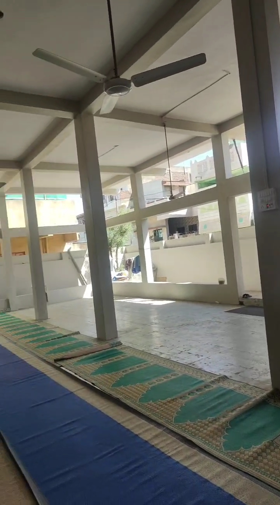
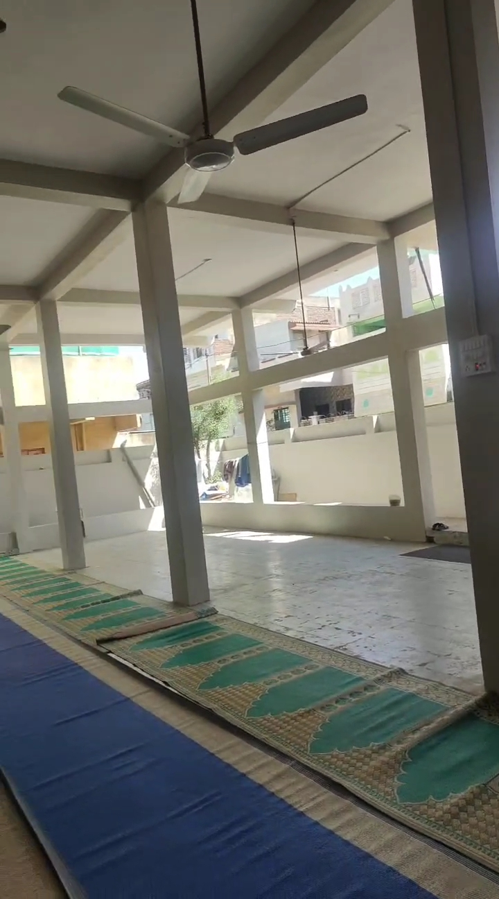
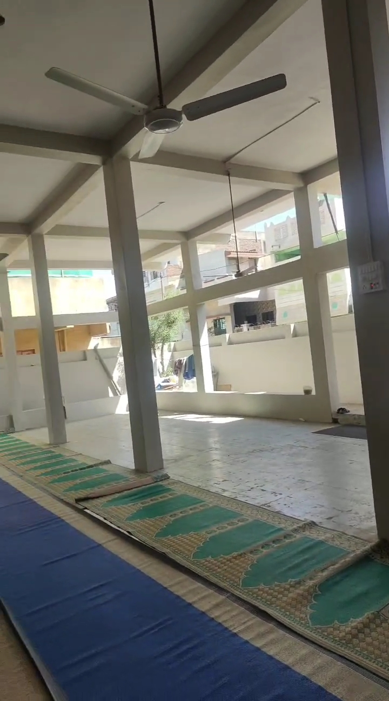

Masjid Gallery
 


"Indeed, the mosques of Allah are only to be maintained by those who believe in Allah and the Last Day..." (Qur'an 9:18)
4:15 AM
1:00 PM
5:15 PM
7:10 PM
8:30 PM
Address: Hifazat Nagar, Rajpipla Road, Sarangpur, Ankleshwar, Bharuch, Gujarat – 393001
Urdu: مسجد عائشہ قدیم حفاظت نگر انکلیشور
Established: 1984
Masjid e Aaisha Qadeem has served as a center for prayer, community gatherings, Islamic education, and local welfare since 1984. Located in the heart of Hifazat Nagar, it remains active under the guidance of a dedicated committee and Imam.
